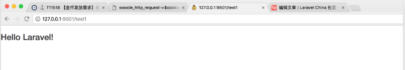
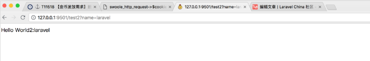

原文出处:本文由博客园博主it-world提供。
原文连接:https://www.cnblogs.com/it-3327/p/11743769.html
原文连接:https://www.cnblogs.com/it-3327/p/11743769.html
1.准备工作
安装 Laravel
laravel new laravel-swoole
本人使用 valet 进行开发，可以使用
laravel-swoole.test
进行访问
2.引入 swoole
具体的 swoole 安装请移步官网进行下载，编译，安装，这里不多阐述了。
1. 在项目更目录创建一个 server 文件夹，然后在该文件夹中创建 http_server.php 文件，具体的文件内容如下
<?php
$http = new swoole_http_server('127.0.0.1', 9501);
$http->set([
'worker_num' => 8,
'max_request' => 5000,
// 'document_root' => '/Users/apple/Code/Teacher_Project/swoole_live/resources/live/',
// 'enable_static_handler' => true,
]);
//工作进程启动
$http->on('WorkerStart', function ($serv, $worker_id) {
//加载index文件的内容
require __DIR__ . '/../vendor/autoload.php';
require_once __DIR__ . '/../bootstrap/app.php';
});
//监听http请求
$http->on('request', function ($request, $response) {
//server信息
if (isset($request->server)) {
foreach ($request->server as $k => $v) {
$_SERVER[strtoupper($k)] = $v;
}
}
//header头信息
if (isset($request->header)) {
foreach ($request->header as $k => $v) {
$_SERVER[strtoupper($k)] = $v;
}
}
//get请求
if (isset($request->get)) {
foreach ($request->get as $k => $v) {
$_GET[$k] = $v;
}
}
//post请求
if (isset($request->post)) {
foreach ($request->post as $k => $v) {
$_POST[$k] = $v;
}
}
//文件请求
if (isset($request->files)) {
foreach ($request->files as $k => $v) {
$_FILES[$k] = $v;
}
}
//cookies请求
if (isset($request->cookie)) {
foreach ($request->cookie as $k => $v) {
$_COOKIE[$k] = $v;
}
}
ob_start();//启用缓存区
//加载laravel请求核心模块
$kernel = app()->make(Illuminate\Contracts\Http\Kernel::class);
$laravelResponse = $kernel->handle(
$request = Illuminate\Http\Request::capture()
);
$laravelResponse->send();
$kernel->terminate($request, $laravelResponse);
$res = ob_get_contents();//获取缓存区的内容
ob_end_clean();//清除缓存区
//输出缓存区域的内容
$response->end($res);
});
$http->start();
在路由文件加入路由:
Route::get('/test1', 'UsersController@test');
Route::get('/test2','UsersController@test2');


链接：https://pan.baidu.com/s/1v5gm7n0L7TGyejCmQrMh2g 提取码：x2p5
免费分享，但是X度限制严重，如若链接失效点击链接或搜索加群 群号518475424。
在控制器添加方法:
/**
* 测试1
* @param Request $request
* @return string
*/
public function test(Request $request)
{
return view('test');#在你的视图文件夹创建test.blade.php
}
/**
* 测试2
* @param Request $request
* @return string
*/
public function test2(Request $request)
{
return 'Hello World2:' . $request->get('name');
}
3. 启动 swoole
在终端下输入:
php server/http_server.php
访问浏览器:
http://127.0.0.1:9501/test1
http://127.0.0.1:9501/test2?name=Jelly
对应的结果如下:
访问 test1 路由

访问 test2 路由
